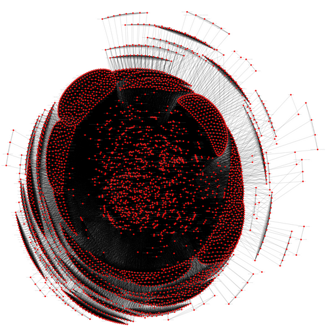

Projects

Named Entity Recognition with Bidirectional LSTM CNNs
NER model for spanish newspapers.

Terrorist Network Analysis
Anaysis performed using the Global Terrorism Databas available at Kaggle.com.

SoldAI Research Infrastructure
Data lake development and Pipeline configuration
Exploratory data analysis
EDA for Emot Ingeniería

Business Intelligence reports for:
- Grupo Convertidora de Papel S.A. de C.V.
- Edumatics
- Galletas Donde